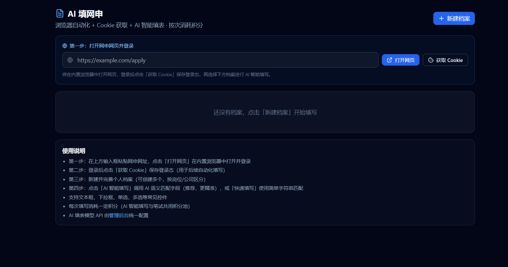

求职 AI 工具指南
大学生求职神器：一套覆盖校招全流程的 AI 工具
所谓“求职神器”不应只是一个口号。对大学生更有价值的是把招聘信息、网申资料、练习、面试准备和投递状态连接起来，并明确每项功能的适用边界。

求职工具选择标准
- 是否覆盖你的目标招聘渠道
- 是否能减少重复填写和信息整理
- 是否提供可复盘的笔试与面试记录
- 是否清楚说明价格、隐私和能力边界
QuizMate 工具组合
- Windows 客户端：笔试练习与面试准备
- Android：移动端辅助与资料查看
- Chrome / Edge 插件：网申、投递和职位监控
- 官网：下载、文档、定价与校招内容
哪些功能免费
- 浏览器求职插件可免费下载
- 客户端提供试用入口
- 官网教程、FAQ 和博客内容可公开访问
- 付费授权价格以充值页显示为准
不适合的情况
- 希望工具替代个人能力或保证录用
- 需要绕过考试、学校或招聘方规则
- 准备上传未经授权的机密或个人敏感信息
常见问题
大学生求职神器应该包含什么？
至少应包含招聘信息整理、网申资料、笔试准备、面试练习和投递进度管理，并清楚说明隐私和使用边界。
QuizMate 是免费的吗？
浏览器求职插件可免费下载，客户端提供试用；持续使用的授权价格以官网充值页为准。
一个账号可以在哪些平台使用？
当前产品信息覆盖 Windows、Android、Chrome 和 Edge，实际版本以下载页为准。
QuizMate 适合社会招聘吗？
部分面试准备、简历和投递管理能力同样适用，但当前内容重点面向校园招聘和应届生。